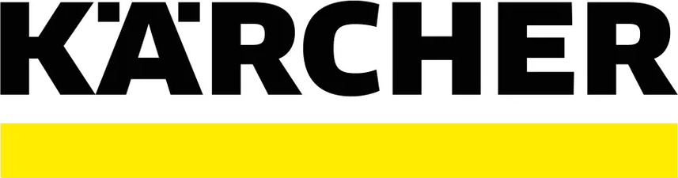

Kärcher · Quick help
Check your material for environmental claims before it goes to a customer.
You have
An offer, a presentation or an email for a customer in the EU that says something about the environment.
You’ll create
A pre-check of your text: which claims are critical under the EU rules against greenwashing, and what to look at again.
Time
About 5 minutes, in Gemini.
What you need
Practice material
A made-up product text with several critical claims. Copy it and paste it into the Gem.
Our new floor cleaner is the sustainable choice for your building. It is eco-friendly, climate-friendly and gentle on the environment. The formula is chemical free, and the bottle is recyclable. With this product you clean green.
Guidance · the rules
The EU Empowering Consumers Directive (short: EmpCo) sets rules against greenwashing. It applies to what we say to customers in the EU. Three rules matter for your sales material:
No self-made sustainability labels. Use certified labels only, not your own pictograms or seals.
No claims with facts that are required by law or are standard for every product of this kind.
No general environmental claims such as "sustainable", "eco-friendly" or "climate-friendly". A claim must be clear, complete and specific, and you need evidence for it.
Pre-check · with the Gem
Open the Gem, attach your document or paste your text, and ask for the pre-check. The Gem marks the claims that are critical under EmpCo.
Copy-paste prompt:
Please pre-check this material for environmental claims.
Check it
The Gem helps you find critical wording. The responsibility for the material stays with you:
Done
Quick help · use it the moment you need it